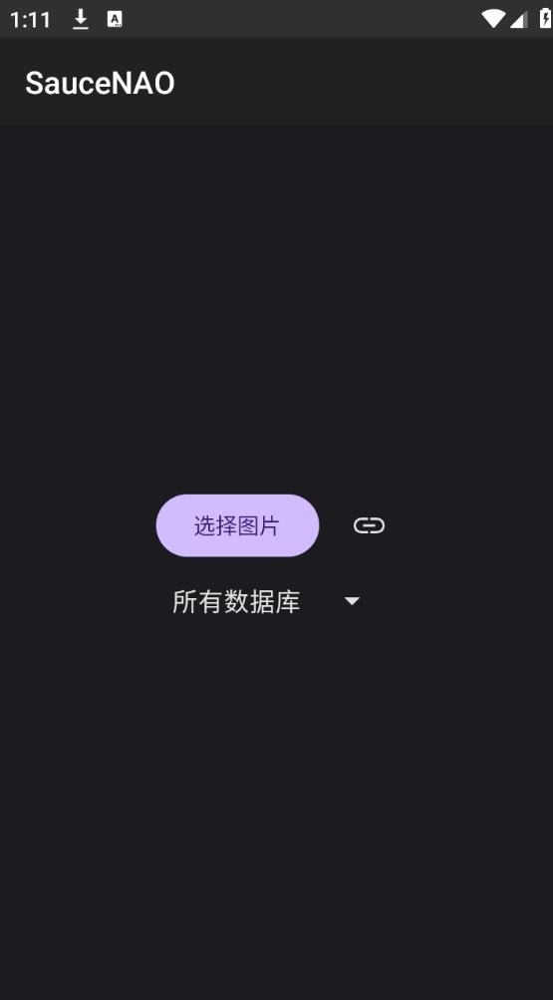
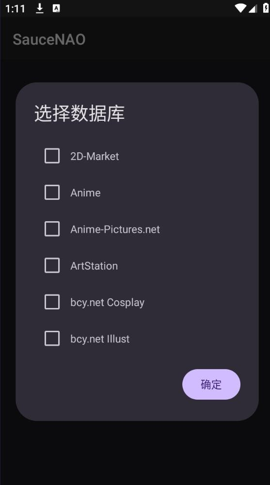
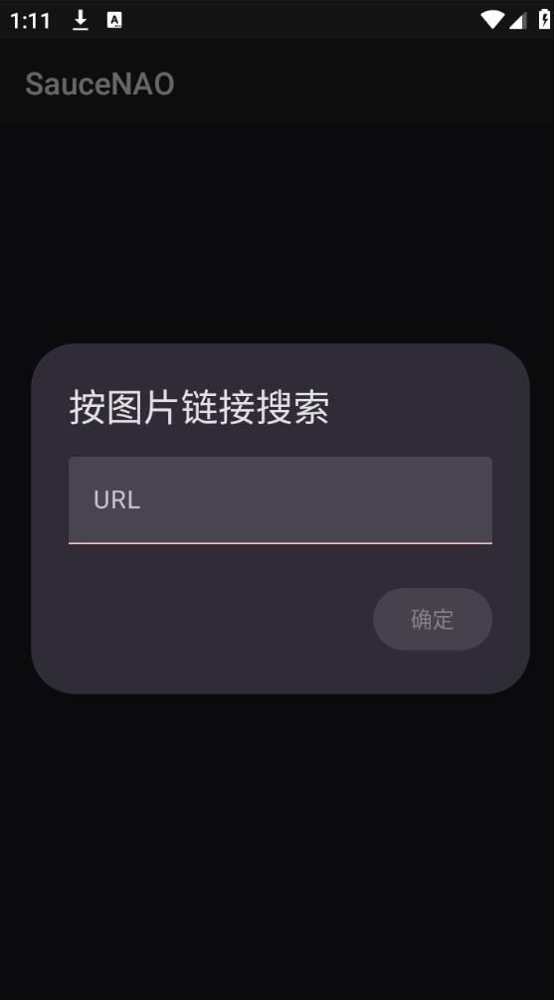

周末整理了 127 张动漫截图，终于知道每张都是谁画的
一次整理收藏夹的意外发现：用 SauceNAO 给 127 张只存了图片没记来源的动漫插画全部找到了原作者，顺带摸清了这套被圈内人藏着的搜图工作流。
上周五晚上收拾桌面文件夹，翻出一个叫「好看」的目录——点进去一看吓了一跳，127 张动漫插画截图，全是我这大半年在各种地方随手存的。问题是，我只存了图，没存出处。
这事儿搁平时也就算了，存了就存了，反正都是好看。但那天不知道哪根筋不对，突然想把这些画儿的作者都找出来，去 pixiv 或 Twitter 上关注一下——毕竟人家画得这么好，光存图不关注说不过去。
于是我打开 Chrome，开了 Google 图片搜索，拖进去第一张图。结果出来一堆相似图，但要么是某个论坛的搬运帖，要么是 Pinterest 的二次转发，没有一个能直接指向原作者的主页。试了三张都是这德行，我把浏览器最小化，打开微信准备问问朋友有没有什么好办法。
朋友甩来一个链接：就用这个
朋友听完我说的情况，直接甩了一个 URL：saucenao官网。他说这是日本那边做的反向搜图引擎，专门索引插画、cos 照、动画截图这些内容，比 Google 图片准得多，圈内画师找参考图基本都用这个。
我打开页面，第一眼感觉挺朴素的——一个大大的上传框，右边一堆看不懂的数据库复选框，顶部一个 search 按钮。没花里胡哨的东西。

随手拖了一张图进去，点 Search。等了大概三四秒，结果页出来了，第一条就是 Danbooru 上的收录记录，点进去顺着标签找到了 pixiv 上的原始发布页——画师叫「みずき」，推特粉丝还不少。我去推特上搜了一下，确实是这位，头像画风跟我存的图一模一样。
就这一下，我知道这东西比 Google 图片靠谱多了。
但也不是每次都一击命中
我兴冲冲地拖第二张图进去，ALL 模式搜完，结果页第一条相似度只有 62%，看起来不太对。再往下翻，有一条 58% 的命中是个完全没见过的图站。我皱了皱眉，难道这张图不在 SauceNAO 的数据库里？
这时候我注意到页面右边那堆复选框了。刚才没仔细看，原来那六十多个小框不是摆设——每个框对应一个特定的图片数据库。默认全勾上是 ALL 模式，但如果你能大概猜到图来自哪里，手动勾几个更精准的库，反而能搜得更快更准。
我重新想了想第二张图的画风：是那种很典型的日式赛璐璐上色，画面右下角有个半透明的「@xxx」水印——虽然水印被裁掉了一半，但依稀能看出是个日文用户名。这种风格大概率是 pixiv 或 Twitter 上的画师首发的。
于是我展开「Show Index List」下拉，把 Pixiv Images、Danbooru、Twitter 这三个勾上，其他全取消，重新搜了一次。
这次结果页第一条相似度 97%，直接命中了 Danbooru 上的完整套图收录，顺着 Danbooru 的外链找到了 pixiv 原页和 Twitter 账号。前后差了不到两秒。

摸出一点门道：按场景选数据库
试了十来张之后，我慢慢摸出点规律。SauceNAO 默认 ALL 模式搜完 60 多个数据库，覆盖面最广但速度也最慢——而且很多时候结果里混了一堆不相关的来源，反而干扰判断。按图的类型挑几个常用库，效率提升明显。
如果是找插画原作者，基本就勾 Pixiv Images + Danbooru + Twitter 这三个，再加个 bcy.net Illust 覆盖国内画师。cos 照的话换成 Danbooru + Sankaku Channel + bcy.net Cosplay，coser 通常会在这几个地方发套图。动画截图就更简单了，勾 Anime + Madokami + MangaDex，专门收动画帧和漫画页的数据库，命中率很高。
最离谱的是我存了一张分辨率很低的图，ALL 模式搜了一分钟结果全不对。我观察了一下画面——像是从某个日本论坛扒的，加上了 Nico Nico Seiga 和 Nijie Images 两个库，这次 3 秒就命中了。原来那图确实是 Nijie 上首发的，ALL 模式里 Nijie 的结果被排在后面淹没了。
有个小技巧：SauceNAO 不记住你的勾选偏好，每次打开都回到 ALL。如果有几套常用组合，可以把带 db 参数的 URL 存成书签，点一下就带着你选的那几个库直接搜。具体参数写法去saucenao文档查就行。
命中多个来源时，哪条才是原图
随着我搜的图越来越多，还遇到另一个问题——同一张图经常在好几个数据库里同时命中。SauceNAO 默认按相似度排序，但相似度最高的那条不一定是最有价值的。
比如有一张图，Danbooru 上的相似度 94%，而 pixiv 上的只有 91%。但我点进去看了之后发现，Danbooru 上那张是被人重新上传、压缩过的副本，而 pixiv 上那条才是画师原始发布的，带完整标题和作者简介。相似度低了 3%，但信息差了十万八千里。
后来我养成了一个简单的判断顺序：先看有没有 Pixiv 或 Twitter 的命中——这俩通常是画师首发地；没有的话再看 ArtStation、Pawoo.net、Nico Nico Seiga；再没有才去看 Danbooru、Gelbooru 这些图站。图站大多是机器人爬来的二次上传，不是原始出处。
这个判断顺序帮我省了不少时间，127 张图里大概有三十多张遇到了多源命中，按这个顺序找，基本每次都能定位到正确的原作者。
效率翻倍的小插件
搜到第 40 多张的时候，我发现一个问题——很多图不是存在本地的，是我在 Twitter、Pixiv 或者各种博客上看到的、直接右键「图片另存为」下载的。每次搜到本地图再去存，效率有点低。
朋友给我推荐了一个扩展：Image Search Options。装完之后，在任意网页的图片上右键，弹出的菜单里多了一个子菜单，里面列着 SauceNAO、IQDB、TinEye、Google 图片等好几个搜索引擎的入口。点一下 SauceNAO，新标签页直接打开搜索结果。

这个扩展是社区维护的，但 SauceNAO 官方在工具页把它放在最前面推荐，相当于半官方地位。完全免费开源，Chrome 和 Firefox 都能装，可以去saucenao下载获取扩展安装包。装完之后我就开始在网上随便逛了——看到有意思的插画直接右键搜一下，一秒出结果，比手动打开 saucenao.com 再上传快了不止一点。
最后：127 张图全部搞定
整个周末花了大概三个小时，127 张图全部找到了原作者。去重之后是 89 位画师，我在 Twitter 和 pixiv 上分别关注了一遍。
回头看这个事情，说起来挺简单的——就是一个搜图工具。但 SauceNAO 和 Google 图片最大的区别在于，它专注。不搜建筑、不搜商品、不搜宠物表情包，就盯着插画、cos 照、动画截图这些二次元内容。数据库分了 60 多个类，每个库都有明确的收录范围，搜的时候你可以精准选择。
这种专注换来了搜索的准确率——我这 127 张图里，有 119 张一次就找到了正确出处，剩下 8 张要么是数据库范围没选对、要么是图本身太模糊。没有一张是真的搜不到的。
如果 SauceNAO 有 API 的话我肯定会写个脚本批量处理，但免费账户的 API 限流是双层的：30 秒内 8 次、24 小时内 200 次。批量跑的话很容易撞短窗口限流，而且 200 次封顶意味着一天最多处理 200 张。所以还是手动搜比较舒服，边搜边看看图，本来周末就不赶时间。
顺带说一下，SauceNAO 的官网是完全免费的，网页端也没有广告弹窗，就是个纯粹的搜图页面。升级账户可以提升限流额度，但像我这种个人用户，每天几十次完全够用。
127 张图整理完了，桌面也干净了不少。下次再存新图，我打算养成习惯——存的同时用右键扩展搜一下，顺手记住作者。毕竟人家花时间画出来的，光存不走动说不过去。
顺便提一句，SauceNAO 的官方网站在浏览器里直接用就行，不用下载也不用注册。如果想查更详细的数据库说明、API 接入文档或者其他进阶玩法，可以去 SauceNAO 的中文文档站翻一下，内容挺全的。上面提到的那个 Image Search Options 扩展，也是文档里推荐的官方认可工具。
这套资料我同步维护在三个仓库里，方便不同网络环境的朋友查阅：GitHub 上的 SauceNAO 文档目录是主版本，Gitee 上有一份镜像方便国内用户直接访问，GitCode 上也同步了一份作为备份。三个仓库内容完全一致，随便挑哪个都行。